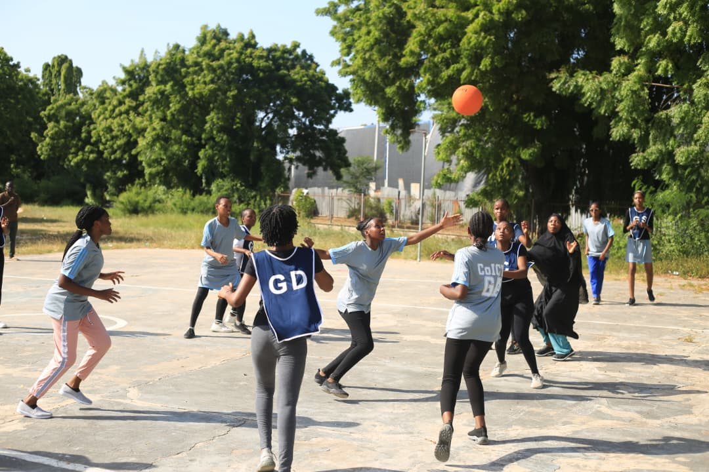

Born on 10th August 2005 in Dar es salaam, Tanzania, Happygrace Joshua grew up in a family that valued education above much else. she attended school diligently through every level, eventually enrolling at the University of Dar es salaam to pursue a Bachelor's in Computer science-a path she chose not by accident, but by conviction. She saw in technology what others miss:a tool for solving real problems and bulding something truly her own. A poet at heart and a thinker by nature, Happy is not just learning to code-she is learning to lead. At university, she is quietly laying the foundation for a future she has already begun to imagine clearly. She is only getting started.
| Level | School | Year |
|---|---|---|
| Primary | Tusiime | 2012-2018 |
| Ordinary | Canossa | 2019-2022 |
| Advanced | Msolwa St Gaspar | 2023-2025 |
| University | UDSM | 2025-present |
Loves mostly the fantasy, mystery, sci-fi genres out of many
Loves to listen to, read or even create poems every once in a while
genres listed as loved most as those of novels
